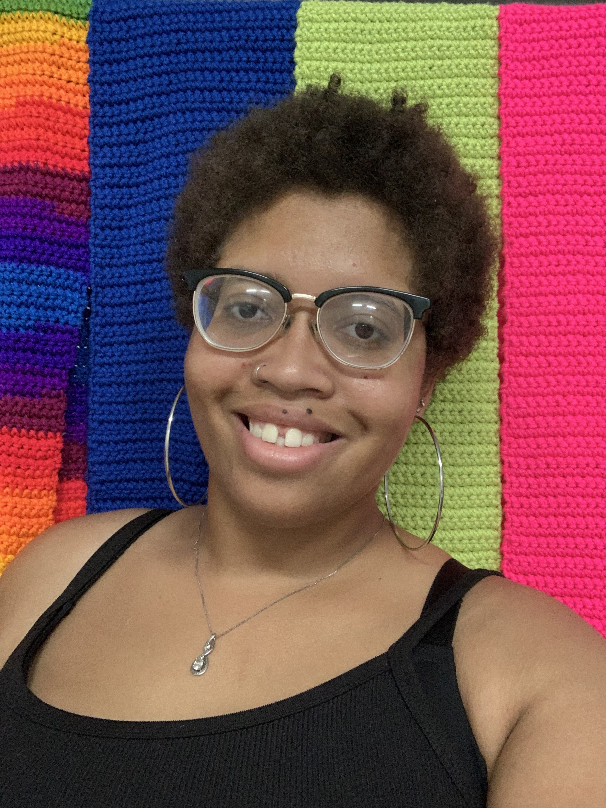

My name is Brittany! I'm an art enthusiast that is actively learning my newest art form, the art of computer programming and design. So far I've studied many different art forms and I'm constantly looking for my next new thing to learn. I'm incredibly grateful being given the opportunity to share what I love with others through stories, pictures, and on special occasions through showing projects I've completed. Art has been something I've been interested in since I was around the age of six, getting to bring home hand drawn pictures to my parents for them to put them on the fridge was where it all started and has continued to grow into my own gallery wall at home that my parents have saved for me to put up my artwork that I'm the proudest of, they've been great supporters in my art journey, and as my gallery continues to grow so does my love for sharing!